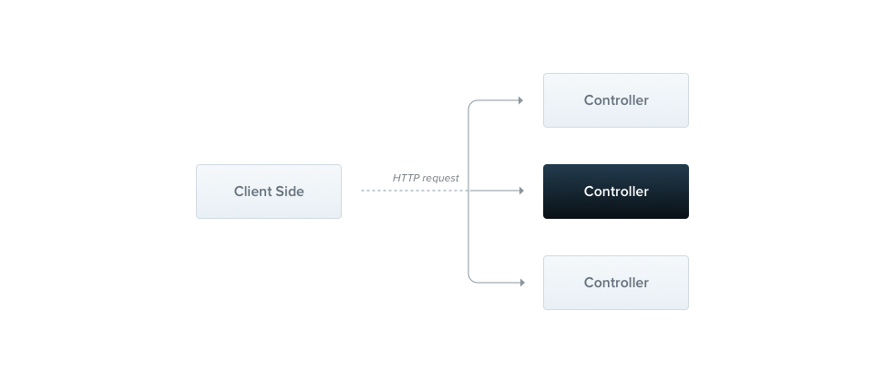

NestJS 공식문서 번역 겸 공부하는 글 입니다.
의역 및 오역이 있을 수 있습니다.
https://docs.nestjs.com/controllers
Controllers
Controllers
Controller는 들어오는 request를 핸들링하고 클라이언트에게 response를 반환하는 역할.

routing mechanism은 어떤 controller가 어떤 request를 받을지 컨트롤한다. 각각의 controller는 보통 하나 이상의 route를 갖고, 서로 다른 route는 각각 다른 일을 수행힌다.
Routing
아래 예제에서는 basic controller를 정의하는데 필요한 @Controller() 데코레이터를 사용한다. @Controller() 데코레이터는 관련된 route들을 쉽게 그룹화 할 수 있게 해주며, 코드의 반복을 줄여준다. 예를 들어, customer entity와 상호작용하는 route의 그룹이 있다면, /customers 라는 route로 묶을 수 있다. 이 경우, @Controller(‘customers’) 데코레이터를 사용하여 쉽게 그룹화 가능하다.
// cats.controller.ts
import { Controller, Get } from '@nestjs/common';
@Controller('cats')
export class CatsController {
@Get()
findAll(): string {
return 'This action returns all cats';
}
}
@Get() HTTP request method 데코레이터는 Nest에게 HTTP request의 특정 엔드포인트에 대한 핸들러를 만들도록 한다. 엔드포인트는 HTTP request method(위 예제에서는 GET), route path에 일치하는 경로로 라우팅 된다. route path란, controller에 선언된 prefix와 request decorator에 의해 특정된 path의 결합이다.
예제에서 모든 route에 대한 prefix(cats)를 선언하였고, decorator에는 path 정보를 추가하지 않았으므로, Nest는 GET /cats에 대한 request를 해당 핸들러에 매핑할 것이다.
만약, path prefix가 customers 이고, decorator가 @Get(‘profile’)인 경우는 GET /customers/profile 경로로 매핑될 것이다.
위의 예제에서, 해당 엔드포인트에서 GET request가 만들어지면, Nest는 request를 findAll() method에 라우팅 할 것이다. method명은 임의로 지어진 것이다. 우리는 route에 bind될 method를 선언해야하지만, Nest는 method의 이름은 신경쓰지 않는다.
이 method는 200이라는 status code와 string을 response로 반환할 것이다. 이것에 대해 설명하려면, response를 다루기 위해 Nest에서 제공하는 2가지 옵션에 대해 알아야 한다.
| Standard (recommended) | request handler가 Javascript object 또는 array를 반환할 때 자동으로 JSON 형태로 직렬화 된다. 그러나, Javascript 원시타입(string, number, boolean 등)을 반환할 때에는 직렬화 없이 값을 반환한다. 이것은 response handling을 간단하게 만들어 준다. 또한, response의 status code는 항상 기본값이 200이며, POST의 경우는 201을 사용한다. 이것은 @HttpCode() 데코레이터를 추가하여 간단하게 변경 가능하다. |
| Library-specific | @Res() 데코레이터를 사용하여 library-specific response object(예를 들어, Express)를 사용할 수도 있다(예를 들어, findAll(@Res() response)). 이러한 접근법으로 native response handling method들을 사용 가능하다. 예를 들어, Express를 사용한다면 아래의 코드처럼 사용 가능하다.response.status(200).send() |
Warningibrary-specific option을 사용하기 위해 @Res()와 @Next()를 모두 사용하면 Nest는 이를 감지하여 standard는 자동으로 disabled 된다. 두 접근법을 동시에 사용하기 위해서는 passthrough option을 true로 사용해야 한다.@Res({ passthrough: true })
Request object
번역중…